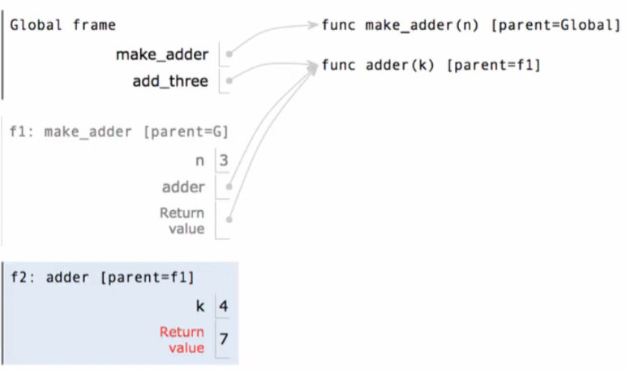
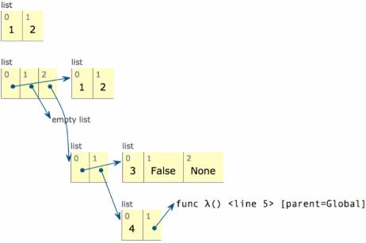

Environments
Table of Contents
1. Environments
Every expression is evaluated in the context of an environment. An environment consists of a sequence of frames, which keeps track of the names bound to values. Every expression is evaluated in the context of an environment.
When it comes to assigning frames:
- Every user-defined function has a parent frame
- The parent of a function is the frame in which it was defined
- Every local frame has a parent frame
- The parent of a frame is the parent of the function called
A name evaluates to the value bound to that name in the earliest frame of the current environment in which that name is found. For example, if we are executing the body of some user-defined function, to look up a name we will first look for that name in the local frame of that function, and then the global frame. Therefore, names have different meanings in different environments.
Environment diagrams visualize the interpreter's process. There is code on the left with statements and expressions, with the arrows indicating evaluation order. On the right we have frames, where we keep track of names bound to values:

1.1. Multiple Environments
As we mentioned, an environment is a sequence of frames. Specifically, it is either:
- The global frame
- Local frames, followed by a global frame
Local frames are added to the environment when a user-defined function is called. If another user-defined function is called within that function, there is also the possibility to create yet another environment. For example, in the environment diagram below:

(1) is an environment, but so are both of the environments consisting of (1) and (2) together. Only one of these environments is the active one at any moment, and that is determined based on where the program is executing. For example, if the program is executing within the user-defined function square, then the environment is (1) and (2); otherwise, the environment is the global frame (1).
A return statement allows us to bind names in local frames to names in global frames. For example, by returning a value from a function and setting that to a name in the global frame, we can now access that value in the global context.
2. Environments for Nested Definitions
When we define a function inside of another function, we add a local frame for the inside function that is a parent of the frame for the outside function. For example, for the nested definition:
def make_adder(n):
def adder(k):
return k + n
return adder
The environment diagram when defining adder is:

Now, when we are referencing n inside of adder, the interpreter finds the earliest bound name to n, which is in the frame of make_adder.
Note that when we don't have nested definitions, and a function is returning another function inside of it, the frame of the exterior function is not the parent of the interior function. In fact, while we are evaluating the interior function, the environment only consists of the global frame and the frame of that function, which means that local names of the exterior function are not accessible to the interior function in this scenario.
3. Environments for Lambda Expressions
A lambda function's parent frame is the frame in which the lambda expression was created. In the following example:
a = 1
def f(g):
a = 2
return lambda y: a * g(y)
f(lambda y: a + y)(a)
In the last line, the lambda y: a + y is evaluated within the global frame, so the a it refers to within the lambda is a = 1. However, the lambda that is returned within the function f is evaluated within the frame of f, so the a it refers to will instead by a = 2.
4. Environments for Sequences
It is often hard to represent the environment when there are sequences involved due to the closure property. A method for combining data values satsifies this property if the result of combination can itself be combined using the same method.
In other words, this means that, for example, lists can be elements of lists. Closure is powerful because it permits us to create hierarchical structures. However, this also makes representing sequences in environment diagrams hard.
4.1. Box-and-Pointer Notation
To solve this problem, we use box-and-pointer notation. Lists are represented as a row of index-labeled adjacent boxes, one per element. Each box either contains a primitive value or points to another compound value (such as a list):
